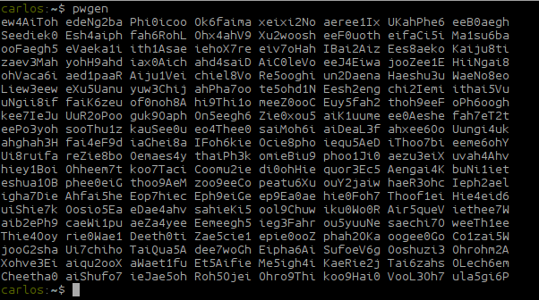
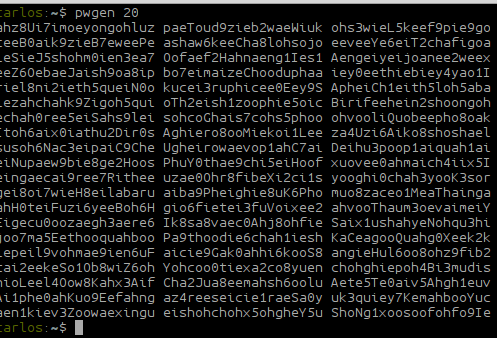
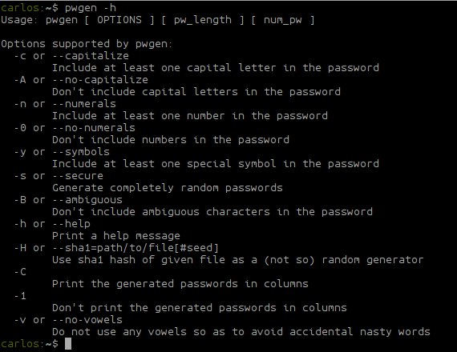

"Gerando senhas seguras"
Posted on 20 janeiro 2016 in Shell Script
Frequentemente preciso enviar senhas de VPN para clientes, criar ou alterar senhas novas para os servidores. Existem diversas ferramentas online que isso possa ser feito, mas ao meu ver, o tempo que demoro em acessar essas ferramentas se torna muito grande. Após algumas pesquisas encontrei um pacote que pode fazer isso pelo terminal.
Para instalar vamos baixar e compilar o pacote.
Primeiramente vamos baixar o source do pacote
wget http://downloads.sourceforge.net/project/pwgen/pwgen/2.07/pwgen-2.07.tar.gz
Vamos descompactar o arquivo
$ tar xvf pwgen-2.07.tar.gz
$ cd pwgen-2.07
Agora vamos compilar
$ ./configure
$ make
$ sudo make install
Agora é só usar o comando
$ pwgen
Por padrão ele gera uma sequencia de caracteres alfanumericos maiusculos e minusculos e numeros com 8 caracteres. Mas caso queira, você pode definir o tamanho maior para as senhas.
 Por exemplo, gerar senhas com 20 caracteres.
$ pwgen 20
 Você pode gerar senhas de infinitas formas, para isso, basta ler o arquivo helper usando o parametro -h

Simples assim :)